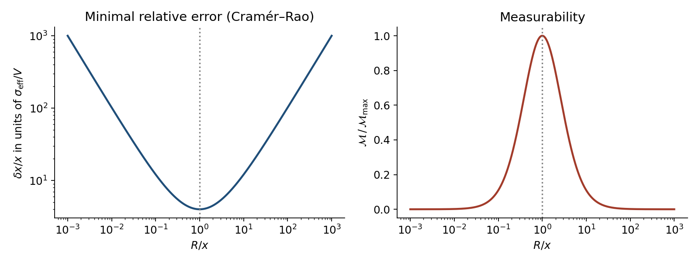
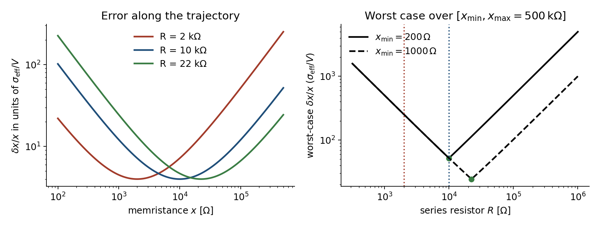
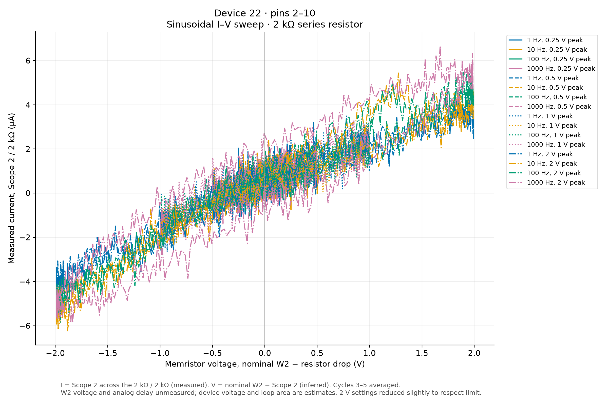
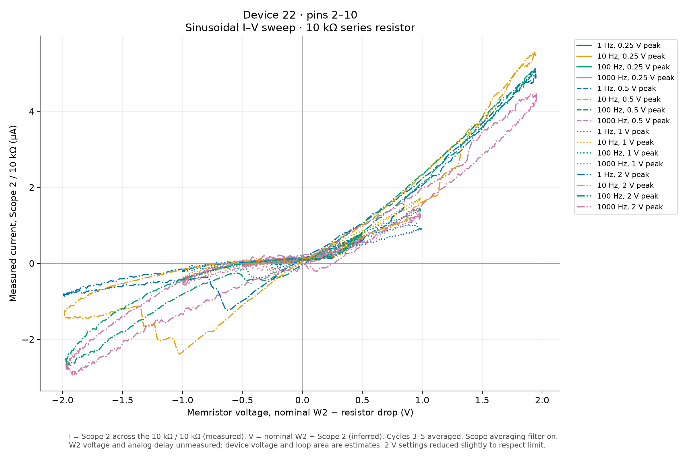

estimation theory • Cramér-Rao • memristors • noise
Cramér-Rao bounds for unknown resistors, and the case of memristors
October 20th, 2026
You might not know that I have finally managed to set up a small laboratory setup for my electronic experiments. A few days ago I was measuring the hysteresis loop of a memristor connected in series with a resistor $R$. I drive both with a function generator and look at the voltage across $R$ on the scope: that gives me the current, and plotting the voltage across the memristor against that current gives the pinched loop. The odd thing is that with $R=2\,{\rm k}\Omega$ the loop was noisy, and with $R=10\,{\rm k}\Omega$ it was much cleaner, even though the memristor's resistance ranges over several orders of magnitude, up to hundreds of kilo-ohms.
The folklore says "the series resistor should be comparable to the device". In this post I want to turn the folklore into a formula, also considering that the device has a range, rather than a fixed valueß. The plan is: (i) learn just enough estimation theory to define the smallest possible error on an unknown resistance, (ii) apply it to a plain unknown resistor in a voltage divider, (iii) let the resistor move, which is what a memristor does, and ask for the best $R$ over a whole loop. I will put this into practice with some experiments, and finally discuss the assumptions and what is left out.
No prior knowledge of statistics is assumed: only Gaussian noise, a derivative, and the Cauchy-Schwarz inequality.
1. The problem: a resistor you cannot read directly
The circuit is a series connection of a known resistor $R$ and an unknown resistor $x$, driven by a voltage $V$ (for a memristor, $x$ will depend on time; for now it is just a number). The two voltages are given by the voltage divider:
$$V_R = V\,\frac{R}{R+x},\qquad V_M = V\,\frac{x}{R+x},\qquad V_R+V_M=V,\qquad I=\frac{V_R}{R}.$$
The unknown is $x$. What I actually record are two noisy numbers, one per scope channel,
$$y_1 = V_R + n_1,\qquad y_2 = V_M + n_2,\qquad n_i\sim\mathcal N(0,\sigma_i^2)\ \text{independent}.$$
The noise $n_i$ is whatever the scope adds: input noise, quantization, pickup. I take it to be additive, white and independent of $R$ and of the signal. That last point is the whole game: the noise floor is a fixed number of volts, so what matters is how many volts of signal I get per ohm of change of $x$.
"Any procedure" is a strong statement, and it is exactly what the Cramér-Rao bound delivers. So let us build it.
2. A ten-minute course on Fisher information and Cramér-Rao
Estimators. We want to learn a parameter $\theta$ from data $y$ whose probability density $p(y|\theta)$ depends on $\theta$. An estimator $\hat\theta(y)$ is any function of the data. It is unbiased if $\mathbb E[\hat\theta]=\theta$. Its quality is its variance $\mathrm{Var}(\hat\theta)$.
The score. Define the score $s(y;\theta)=\partial_\theta \ln p(y|\theta)$. It tells us how sensitively the likelihood reacts to a change of $\theta$. Two facts are all we need.
$$\mathbb E[s]=\int \partial_\theta p\,dy=\partial_\theta\!\int p\,dy=\partial_\theta 1=0,$$
and, if $\hat\theta$ is unbiased, differentiating $\mathbb E[\hat\theta]=\theta$ under the integral gives
$$1=\partial_\theta\!\int \hat\theta\,p\,dy=\int\hat\theta\,\partial_\theta p\,dy=\mathbb E[\hat\theta\, s]=\mathbb E[(\hat\theta-\theta)\,s],$$
where the last step used $\mathbb E[s]=0$.
The bound. Apply the Cauchy-Schwarz inequality, $\big(\mathbb E[ab]\big)^2\le\mathbb E[a^2]\,\mathbb E[b^2]$, to $a=\hat\theta-\theta$ and $b=s$:
$$1\le \mathrm{Var}(\hat\theta)\;\mathbb E[s^2]\quad\Longrightarrow\quad \boxed{\mathrm{Var}(\hat\theta)\ \ge\ \frac{1}{J(\theta)}},\qquad J(\theta)\equiv\mathbb E[s^2].$$
$J$ is the Fisher information. That is the entire Cramér-Rao bound: the variance of an unbiased estimator cannot beat the inverse of the Fisher information. For independent observations the scores add, hence so do the informations.
The rule we will use. Suppose the data are $y=g(\theta)+n$ with $n\sim\mathcal N(0,\sigma^2)$. Then $\ln p=-(y-g(\theta))^2/(2\sigma^2)+\text{const}$, so the score is $s=(y-g)\,g'(\theta)/\sigma^2$, and since $\mathbb E[(y-g)^2]=\sigma^2$,
$$J(\theta)=\frac{g'(\theta)^2}{\sigma^2}.$$
Sanity check: measuring a voltage directly, $g(\theta)=\theta$, gives $J=1/\sigma^2$ and $\mathrm{Var}\ge\sigma^2$, which the data point itself saturates. With $N$ independent readings, $J=N/\sigma^2$, the familiar $\sigma^2/N$.
3. The unknown resistor in a voltage divider
3.1 Information on $x$ from the two channels
Here $\theta=x$, and the two channels are $g_1=V_R$, $g_2=V_M$. We need their slopes with respect to $x$:
$$\frac{\partial V_R}{\partial x}=-\frac{VR}{(R+x)^2},\qquad \frac{\partial V_M}{\partial x}=+\frac{VR}{(R+x)^2}.$$
They are equal and opposite, which is no surprise: $V_R+V_M=V$ is fixed, so whatever one channel gains the other loses. (If the generator voltage $V$ is known, the two channels contain the same information about $x$, and using both just averages down the noise.) Adding the informations,
$$J(x;R)=\Big(\frac{1}{\sigma_1^2}+\frac{1}{\sigma_2^2}\Big)\frac{V^2R^2}{(R+x)^4} =\frac{1}{\sigma_{\rm eff}^2}\,\frac{V^2R^2}{(R+x)^4},\qquad \sigma_{\rm eff}^{-2}\equiv\sigma_1^{-2}+\sigma_2^{-2}.$$
For two equal channels $\sigma_{\rm eff}^2=\sigma^2/2$.
3.2 The minimal relative error
Since resistances span decades, the natural quantity is the relative error. Cramér-Rao gives
$$E(R;x)\equiv\Big(\frac{\delta x}{x}\Big)^2_{\min}=\frac{1}{x^2J}=\frac{\sigma_{\rm eff}^2}{V^2}\,\frac{(R+x)^4}{R^2x^2}.$$
This depends on $R$ and $x$ only through the ratio. Let $u=\ln(R/x)$. Then
$$\frac{(R+x)^2}{Rx}=\frac{R}{x}+2+\frac{x}{R}=2+2\cosh u=4\cosh^2\!\frac u2,$$
and therefore
$$\boxed{\ \frac{\delta x}{x}\Big|_{\min}=\frac{2\sigma_{\rm eff}}{V}\,\big(1+\cosh u\big)=\frac{4\sigma_{\rm eff}}{V}\cosh^2\!\frac u2\ }$$
It is even in $u$, so a factor-of-ten mismatch costs the same whether $R$ is ten times too big or ten times too small. It is minimal at $u=0$, i.e. at $R=x$, where $\delta x/x=4\sigma_{\rm eff}/V$. And for $|u|\gg1$,
$$\frac{\delta x}{x}\;\simeq\;\frac{\sigma_{\rm eff}}{V}\,\max\!\Big(\frac{R}{x},\frac{x}{R}\Big),$$
so the error grows linearly with the mismatch.
3.3 A measurability function
It is convenient to flip this around and define a figure of merit that is large when the measurement is good: $\mathcal M=1/E$, the squared signal-to-noise ratio on $x$ itself,
$$\mathcal M(R;x)=\Big(\frac{V}{\sigma_{\rm eff}}\Big)^2\frac{1}{16}\,\mathrm{sech}^4\!\Big(\frac12\ln\frac{R}{x}\Big).$$
It is a bell curve in $\ln(R/x)$, peaked at $R=x$, with the maximum value $(V/\sigma_{\rm eff})^2/16$. Everything about "which $R$ is good for which $x$" is in this one function.

3.4 Why a divider wants $R\approx x$
3.5 What if $V$ is not trusted?
In practice the generator amplitude into a load is not exactly what the front panel says, so let us treat $V$ as a second unknown. The parameters are $\theta=(x,V)$ and the data are $(y_1,y_2)$, so the Jacobian of the noiseless map $(x,V)\mapsto(V_R,V_M)$ is square:
$$\mathsf J=\begin{pmatrix}-a & b_1\\ a & b_2\end{pmatrix},\qquad a=\frac{VR}{(R+x)^2},\quad b_1=\frac{R}{R+x},\quad b_2=\frac{x}{R+x}.$$
For a square Jacobian, the Cramér-Rao covariance is $\mathsf J^{-1}\Sigma\,\mathsf J^{-T}$ with $\Sigma=\mathrm{diag}(\sigma_1^2,\sigma_2^2)$. Since $\det\mathsf J=-a(b_1+b_2)=-a$, the first row of $\mathsf J^{-1}$ is $(-b_2/a,\ b_1/a)$, and for equal channels $\sigma_1=\sigma_2=\sigma$
$$\mathrm{Var}(x)\ge\sigma^2\,\frac{b_1^2+b_2^2}{a^2}\ \Longrightarrow\ \Big(\frac{\delta x}{x}\Big)^2=\frac{\sigma^2}{V^2}\,\frac{(R^2+x^2)(R+x)^2}{R^2x^2}=\frac{\sigma^2}{V^2}\,4\cosh u\,(1+\cosh u).$$
It is still even in $u$ and still minimized at $R=x$. Compared with the known-$V$ case (which in terms of the per-channel $\sigma$ reads $\tfrac{2\sigma^2}{V^2}(1+\cosh u)^2$), the variance ratio is $2\cosh u/(1+\cosh u)$: equal to $1$ at $u=0$ and tending to $2$ for large mismatch. So knowing $V$ helps only when the divider is badly unbalanced, and the optimal $R$ does not change.
One more remark: if you use only one channel (say just $V_R$, with $V$ known), the same computation gives the same formula with $\sigma_{\rm eff}\to\sigma$, i.e. a variance twice as large. The second channel buys exactly a factor $2$.
4. A memristor is a resistor that moves
A memristor is a resistor $x(t)$ whose value depends on its own history, for instance through a state equation like $\dot x=f(x,V_M)$. During a loop it sweeps a whole range $[x_{\min},x_{\max}]$. Write $\kappa=x_{\max}/x_{\min}$. For the device I have in mind $x_{\max}\sim500\,{\rm k}\Omega$ and $\kappa$ is in the thousands.
4.1 Quasi-static estimation
At each instant I want $x(t)$ from the two scope samples. If $x$ changes little over the time it takes to collect an independent sample, the previous section applies pointwise, with the instantaneous $x(t)$ in place of $x$. (If you average $N$ independent samples, or equivalently filter the traces, $\sigma^2\to\sigma^2/N$; averaging is helpful only as long as it does not smear the dynamics you want to see.) The hysteresis loop is the curve $(I(t),V_M(t))$, and its local slope is $V_M/I=x$, so the quality of the loop is the quality of $x(t)$ along the trajectory.
4.2 One number for the whole loop
Now the error depends on $x$, and $x$ moves, while $R$ is fixed once for the whole experiment. We need a single score. There are two natural choices.
(a) Worst case (minimax). Because $E$ is even and increasing in $|u|$, the worst point of the trajectory is always an endpoint, $x_{\min}$ or $x_{\max}$. Minimizing the larger of the two errors means making $|\ln R-\ln x_{\min}|=|\ln x_{\max}-\ln R|$, that is,
$$\boxed{\,R^*=\sqrt{x_{\min}\,x_{\max}}\,}$$
the geometric mean of the two ends of the range. At this value $u=\pm\tfrac12\ln\kappa$ at the two ends, and the worst-case error is
$$\Big(\frac{\delta x}{x}\Big)_{\max}=\frac{4\sigma_{\rm eff}}{V}\cosh^2\!\Big(\frac14\ln\kappa\Big)=\frac{\sigma_{\rm eff}}{V}\big(\kappa^{1/4}+\kappa^{-1/4}\big)^2\ \xrightarrow{\ \kappa\gg1\ }\ \frac{\sigma_{\rm eff}}{V}\sqrt{\kappa}.$$
The price of a wide dynamic range is explicit: the error grows like $\sqrt\kappa$, because even with the best compromise $R$ the divider is mismatched by a factor $\sqrt\kappa$ at both ends.
(b) Time-averaged. Let $\langle f\rangle=\frac1T\int_0^T f(x(t))\,dt$ be the average over a cycle, which is the right weighting if the scope samples uniformly in time. The mean relative variance follows from expanding $(R+x)^4/(R^2x^2)$:
$$\langle E\rangle=\frac{\sigma_{\rm eff}^2}{V^2}\Big[R^2\langle x^{-2}\rangle+4R\langle x^{-1}\rangle+6+\frac{4\langle x\rangle}{R}+\frac{\langle x^2\rangle}{R^2}\Big].$$
So the optimal $R$ depends only on four moments of the resistance distribution along the loop. Setting $\partial_R\langle E\rangle=0$ and multiplying by $R^3/2$,
$$\langle x^{-2}\rangle R^4+2\langle x^{-1}\rangle R^3-2\langle x\rangle R-\langle x^2\rangle=0.$$
The coefficients have the sign pattern $(+,+,-,-)$, so by Descartes' rule there is exactly one positive root, and since $\langle E\rangle$ is convex in $\ln R$, it is the minimum. If the distribution of $\ln x$ is symmetric (as for a loop that lingers equally at both ends), the root is exactly the geometric centre, $R^*=e^{\langle\ln x\rangle}$. For a two-point check, take $x\in\{1,4\}$ with equal weights: the root is $R=2=\sqrt{1\cdot4}$, and the quartic indeed vanishes there. The nice feature of this form is that it is directly computable from a measured trajectory.
4.3 The loading catch
Everything above treated the range $[x_{\min},x_{\max}]$ and the dwell statistics as given. They are not: the memristor sees $V_M=Vx/(R+x)$, not $V$. If $R$ is large compared to the device, $V_M$ drops, and a voltage-controlled device may no longer switch through its full range. The honest statement is that $R^*$ is a self-consistent fixed point: the range and moments entering the formulas are those visited with that same $R$ in the circuit. The minimax result only needs the endpoints to actually be reached at the chosen drive amplitude.
5. Back to 2 kΩ versus 10 kΩ
Take $x_{\max}=500\,{\rm k}\Omega$. For $x\gg R$ the error is $\simeq(\sigma_{\rm eff}/V)\,x/R$, so at the high-resistance end going from $2$ to $10\,{\rm k}\Omega$ should reduce the error by up to a factor $5$. The exact formula gives $4.84$. The table gives the worst-case relative error $\delta x/x$ in units of $\sigma_{\rm eff}/V$ (multiply by $\sqrt2$ to express it in units of the per-channel $\sigma/V$ for two equal channels).
| $x_{\min}$ | $R$ | worst-case $\delta x/x$ [$\sigma_{\rm eff}/V$] | where |
|---|---|---|---|
| 200 Ω | 2 kΩ | 252 | at $x_{\max}$ |
| 200 Ω | 10 kΩ $=R^*$ | 52.0 | both ends |
| 1 kΩ | 2 kΩ | 252 | at $x_{\max}$ |
| 1 kΩ | 10 kΩ | 52.0 | at $x_{\max}$ |
| 1 kΩ | 22.4 kΩ $=R^*$ | 24.4 | both ends |
For illustration only: with a noise floor $\sigma_{\rm eff}=1\,{\rm mV}$ and $V=1\,{\rm V}$, the number $52$ means a $5\%$ error on $x$ at the top of the range with $R=10\,{\rm k}\Omega$, versus $25\%$ with $R=2\,{\rm k}\Omega$: the difference between a clean loop and a smeared one. Note also the last two rows: if the device never goes below $\sim1\,{\rm k}\Omega$, the 10 kΩ choice is still good but is no longer the optimum, and a larger $R$ would give another factor $\sim2$, provided the device still switches.

6. Experiments
6.1 Setup
These measurements use device 22, pins 2–10. The waveform generator drove a bipolar sine wave through a series sense resistor, and Scope 2 measured the voltage across that resistor. The plotted current is therefore $I=V_{\rm scope}/R$; the device voltage is estimated as the nominal generator voltage minus the measured resistor drop. Each run swept peak amplitudes of 0.25, 0.5, 1 and 2 V at 1, 10, 100 and 1000 Hz. Six-cycle bursts were acquired and cycles 3–5 averaged at each condition, without resetting the device between conditions.
The 2 kΩ run used the scope averaging filter off; the later 10 kΩ re-measurement used it on. The figures show all 16 amplitude/frequency conditions for each resistor.
6.2 A static test still to be done
A quantitative test of the bound would replace the memristor with a known resistor $x_0$, acquire many repeated records for each $R$, and compare the measured spread of $\hat x=R\,y_2/y_1$ with the predicted curve:
$$\Big(\frac{\delta x}{x_0}\Big)_{\rm emp}=\frac{\mathrm{std}(\hat x)}{x_0}\quad\text{vs.}\quad \frac{2\sigma_{\rm eff}}{V}\big(1+\cosh\ln\tfrac{R}{x_0}\big),$$
with $\sigma_{\rm eff}$ measured independently or fitted. That calibration has not yet been done, so the memristor plots below are a qualitative comparison, not a measurement of the Cramér–Rao bound.
6.3 The memristor loops
The 2 kΩ traces are visibly much more scattered, while the 10 kΩ traces resolve the loop more cleanly. This is qualitatively what the bound suggests at the high-resistance end: increasing $R$ improves sensitivity to changes in a large device resistance, and Section 5 predicts up to a $4.84$-fold reduction in relative error there.


This is suggestive, not a controlled confirmation that changing $R$ alone caused the noise reduction: the 10 kΩ run also enabled scope averaging, and the device was not reset between conditions. A like-for-like acquisition and the static-resistor calibration above are needed to test the predicted error quantitatively.
7. Assumptions and what is left out
- Small-noise regime. Cramér-Rao is a local statement. When $\delta x/x$ approaches order one (the far end of the 2 kΩ curve for realistic noise) the bound stops being informative, and the ratio estimator $R\,y_2/y_1$ becomes biased.
- Noise model. I assumed additive white noise, equal and independent on the two channels. Two real effects change it. If each channel is auto-ranged, the noise scales with the range ($\sigma_i\propto$ peak of channel $i$, quantization-limited) and the objective is no longer even in $u$. If $V_M$ is obtained as $V_{\rm gen}-V_R$ instead of measured, the noises are anticorrelated and a cross term appears.
- Thermal noise of $R$ itself. It has variance $4k_BTRB$, which grows with $R$: about $13\,\mu$V rms for $10\,{\rm k}\Omega$, $1$ MHz, $300$ K. Negligible next to typical scope noise, but it sets a floor when $R$ is pushed up.
- Dynamics. The pointwise bound ignores that $x(t)$ is a smooth trajectory; using the equation of motion as a prior (a Bayesian version of the bound, the van Trees inequality) could in principle do better than treating each instant separately.
- Self-consistency of $R^*$ with the device dynamics, as discussed in Section 4.3.